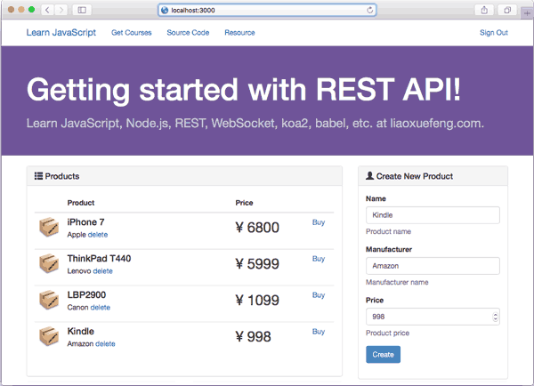

开发REST API
在上一节中，我们演示了如何在koa项目中使用REST。其实，使用REST和使用MVC是类似的，不同的是，提供REST的Controller处理函数最后不调用render()去渲染模板，而是把结果直接用JSON序列化返回给客户端。
使用REST虽然非常简单，但是，设计一套合理的REST框架却需要仔细考虑很多问题。
问题一：如何组织URL
在实际工程中，一个Web应用既有REST，还有MVC，可能还需要集成其他第三方系统。如何组织URL？
一个简单的方法是通过固定的前缀区分。例如，/static/开头的URL是静态资源文件，类似的，/api/开头的URL就是REST API，其他URL是普通的MVC请求。
使用不同的子域名也可以区分，但对于中小项目来说配置麻烦。随着项目的扩大，将来仍然可以把单域名拆成多域名。
问题二：如何统一输出REST
如果每个异步函数都编写下面这样的代码：
// 设置Content-Type:
ctx.response.type = 'application/json';
// 设置Response Body:
ctx.response.body = {
products: products
};
很显然，这样的重复代码很容易导致错误，例如，写错了字符串'application/json'，或者漏写了ctx.response.type = 'application/json'，都会导致浏览器得不到JSON数据。
回忆我们集成Nunjucks模板引擎的方法：通过一个middleware给ctx添加一个render()方法，Controller就可以直接使用ctx.render('view', model)来渲染模板，不必编写重复的代码。
类似的，我们也可以通过一个middleware给ctx添加一个rest()方法，直接输出JSON数据。
由于我们给所有REST API一个固定的URL前缀/api/，所以，这个middleware还需要根据path来判断当前请求是否是一个REST请求，如果是，我们才给ctx绑定rest()方法。
我们把这个middleware先写出来，命名为rest.js：
module.exports = {
restify: (pathPrefix) => {
// REST API前缀，默认为/api/:
pathPrefix = pathPrefix || '/api/';
return async (ctx, next) => {
// 是否是REST API前缀?
if (ctx.request.path.startsWith(pathPrefix)) {
// 绑定rest()方法:
ctx.rest = (data) => {
ctx.response.type = 'application/json';
ctx.response.body = data;
}
await next();
} else {
await next();
}
};
}
};
这样，任何支持REST的异步函数只需要简单地调用：
ctx.rest({
data: 123
});
就完成了REST请求的处理。
问题三：如何处理错误
这个问题实际上有两部分。
第一，当REST API请求出错时，我们如何返回错误信息？
第二，当客户端收到REST响应后，如何判断是成功还是错误？
这两部分还必须统一考虑。
REST架构本身对错误处理并没有统一的规定。实际应用时，各种各样的错误处理机制都有。有的设计得比较合理，有的设计得不合理，导致客户端尤其是手机客户端处理API简直就是噩梦。
在涉及到REST API的错误时，我们必须先意识到，客户端会遇到两种类型的REST API错误。
一类是类似403，404，500等错误，这些错误实际上是HTTP请求可能发生的错误。REST请求只是一种请求类型和响应类型均为JSON的HTTP请求，因此，这些错误在REST请求中也会发生。
针对这种类型的错误，客户端除了提示用户“出现了网络错误，稍后重试”以外，并无法获得具体的错误信息。
另一类错误是业务逻辑的错误，例如，输入了不合法的Email地址，试图删除一个不存在的Product，等等。这种类型的错误完全可以通过JSON返回给客户端，这样，客户端可以根据错误信息提示用户“Email不合法”等，以便用户修复后重新请求API。
问题的关键在于客户端必须能区分出这两种类型的错误。
第一类的错误实际上客户端可以识别，并且我们也无法操控HTTP服务器的错误码。
第二类的错误信息是一个JSON字符串，例如：
{
"code": "10000",
"message": "Bad email address"
}
但是HTTP的返回码应该用啥？
有的Web应用使用200，这样客户端在识别出第一类错误后，如果遇到200响应，则根据响应的JSON判断是否有错误。这种方式对于动态语言（例如，JavaScript，Python等）非常容易：
var result = JSON.parse(response.data);
if (result.code) {
// 有错误:
alert(result.message);
} else {
// 没有错误
}
但是，对于静态语言（例如，Java）就比较麻烦，很多时候，不得不做两次序列化：
APIError err = objectMapper.readValue(jsonString, APIError.class);
if (err.code == null) {
// 没有错误，还需要重新转换:
User user = objectMapper.readValue(jsonString, User.class);
} else {
// 有错误:
}
有的Web应用对正确的REST响应使用200，对错误的REST响应使用400，这样，客户端即是静态语言，也可以根据HTTP响应码判断是否出错，出错时直接把结果反序列化为APIError对象。
两种方式各有优劣。我们选择第二种，200表示成功响应，400表示失败响应。
但是，要注意，绝不能混合其他HTTP错误码。例如，使用401响应“登录失败”，使用403响应“权限不够”。这会使客户端无法有效识别HTTP错误码和业务错误，其原因在于HTTP协议定义的错误码十分偏向底层，而REST API属于“高层”协议，不应该复用底层的错误码。
问题四：如何定义错误码
REST架构本身同样没有标准的错误码定义一说，因此，有的Web应用使用数字1000、1001……作为错误码，例如Twitter和新浪微博，有的Web应用使用字符串作为错误码，例如YouTube。到底哪一种比较好呢？
我们强烈建议使用字符串作为错误码。原因在于，使用数字作为错误码时，API提供者需要维护一份错误码代码说明表，并且，该文档必须时刻与API发布同步，否则，客户端开发者遇到一个文档上没有写明的错误码，就完全不知道发生了什么错误。
使用字符串作为错误码，最大的好处在于不用查表，根据字面意思也能猜个八九不离十。例如，YouTube API如果返回一个错误authError，基本上能猜到是因为认证失败。
我们定义的REST API错误格式如下：
{
"code": "错误代码",
"message": "错误描述信息"
}
其中，错误代码命名规范为大类:子类，例如，口令不匹配的登录错误代码为auth:bad_password，用户名不存在的登录错误代码为auth:user_not_found。这样，客户端既可以简单匹配某个类别的错误，也可以精确匹配某个特定的错误。
问题五：如何返回错误
如果一个REST异步函数想要返回错误，一个直观的想法是调用ctx.rest()：
user = processLogin(username, password);
if (user != null) {
ctx.rest(user);
} else {
ctx.response.status = 400;
ctx.rest({
code: 'auth:user_not_found',
message: 'user not found'
});
}
这种方式不好，因为控制流程会混乱，而且，错误只能在Controller函数中输出。
更好的方式是异步函数直接用throw语句抛出错误，让middleware去处理错误：
user = processLogin(username, password);
if (user != null) {
ctx.rest(user);
} else {
throw new APIError('auth:user_not_found', 'user not found');
}
这种方式可以在异步函数的任何地方抛出错误，包括调用的子函数内部。
我们只需要稍稍改写一个middleware就可以处理错误：
module.exports = {
APIError: function (code, message) {
this.code = code || 'internal:unknown_error';
this.message = message || '';
},
restify: (pathPrefix) => {
pathPrefix = pathPrefix || '/api/';
return async (ctx, next) => {
if (ctx.request.path.startsWith(pathPrefix)) {
// 绑定rest()方法:
ctx.rest = (data) => {
ctx.response.type = 'application/json';
ctx.response.body = data;
}
try {
await next();
} catch (e) {
// 返回错误:
ctx.response.status = 400;
ctx.response.type = 'application/json';
ctx.response.body = {
code: e.code || 'internal:unknown_error',
message: e.message || ''
};
}
} else {
await next();
}
};
}
};
这个错误处理的好处在于，不但简化了Controller的错误处理（只需要throw，其他不管），并且，在遇到非APIError的错误时，自动转换错误码为internal:unknown_error。
受益于async/await语法，我们在middleware中可以直接用try...catch捕获异常。如果是callback模式，就无法用try...catch捕获，代码结构将混乱得多。
最后，顺便把APIError这个对象export出去。
开发REST API
我们先根据rest-hello和view-koa来创建一个rest-hello的工程，结构如下：
rest-koa/
|
+- .vscode/
| |
| +- launch.json <-- VSCode 配置文件
|
+- controllers/
| |
| +- api.js <-- REST API
| |
| +- index.js <-- MVC Controllers
|
+- products.js <-- 集中处理Product
|
+- rest.js <-- 支持REST的middleware
|
+- app.js <-- 使用koa的js
|
+- start.js <-- 启动入口js文件
|
+- controller.js <-- 扫描注册Controller
|
+- static-files.js <-- 支持静态文件的middleware
|
+- templating.js <-- 支持Nunjucks的middleware
|
+- package.json <-- 项目描述文件
|
+- views/ <-- Nunjucks模板
|
+- static/ <-- 静态资源文件
|
+- node_modules/ <-- npm安装的所有依赖包
在package.json中，我们需要如下依赖包：
"dependencies": {
"babel-core": "6.13.2",
"babel-polyfill": "6.13.0",
"babel-preset-es2015-node6": "0.3.0",
"babel-preset-stage-3": "6.5.0",
"koa": "2.0.0",
"koa-bodyparser": "3.2.0",
"koa-router": "7.0.0"
"nunjucks": "2.4.2",
"mime": "1.3.4",
"mz": "2.4.0"
}
运行npm install安装依赖包。
我们在这个工程中约定了如下规范：
- REST API的返回值全部是object对象，而不是简单的number、boolean、null或者数组；
- REST API必须使用前缀
/api/。
第一条规则实际上是为了方便客户端处理结果。如果返回结果不是object，则客户端反序列化后还需要判断类型。以Objective-C为例，可以直接返回NSDictionary*：
NSDictionary* dict = [NSJSONSerialization JSONObjectWithData:jsonData options:0 error:&err];
如果返回值可能是number、boolean、null或者数组，则客户端的工作量会大大增加。
Service
为了操作Product，我们用products.js封装所有操作，可以把它视为一个Service：
var id = 0;
function nextId() {
id++;
return 'p' + id;
}
function Product(name, manufacturer, price) {
this.id = nextId();
this.name = name;
this.manufacturer = manufacturer;
this.price = price;
}
var products = [
new Product('iPhone 7', 'Apple', 6800),
new Product('ThinkPad T440', 'Lenovo', 5999),
new Product('LBP2900', 'Canon', 1099)
];
module.exports = {
getProducts: () => {
return products;
},
getProduct: (id) => {
var i;
for (i = 0; i < products.length; i++) {
if (products[i].id === id) {
return products[i];
}
}
return null;
},
createProduct: (name, manufacturer, price) => {
var p = new Product(name, manufacturer, price);
products.push(p);
return p;
},
deleteProduct: (id) => {
var
index = -1,
i;
for (i = 0; i < products.length; i++) {
if (products[i].id === id) {
index = i;
break;
}
}
if (index >= 0) {
// remove products[index]:
return products.splice(index, 1)[0];
}
return null;
}
};
变量products相当于在内存中模拟了数据库，这里是为了简化逻辑。
API
紧接着，我们编写api.js，并放到controllers目录下：
const products = require('../products');
const APIError = require('../rest').APIError;
module.exports = {
'GET /api/products': async (ctx, next) => {
ctx.rest({
products: products.getProducts()
});
},
'POST /api/products': async (ctx, next) => {
var p = products.createProduct(ctx.request.body.name, ctx.request.body.manufacturer, parseFloat(ctx.request.body.price));
ctx.rest(p);
},
'DELETE /api/products/:id': async (ctx, next) => {
console.log(`delete product ${ctx.params.id}...`);
var p = products.deleteProduct(ctx.params.id);
if (p) {
ctx.rest(p);
} else {
throw new APIError('product:not_found', 'product not found by id.');
}
}
};
该API支持GET、POST和DELETE这三个请求。当然，还可以添加更多的API。
编写API时，需要注意：
如果客户端传递了JSON格式的数据（例如，POST请求），则async函数可以通过ctx.request.body直接访问已经反序列化的JavaScript对象。这是由bodyParser()这个middleware完成的。如果ctx.request.body为undefined，说明缺少middleware，或者middleware没有正确配置。
如果API路径带有参数，参数必须用:表示，例如，DELETE /api/products/:id，客户端传递的URL可能就是/api/products/A001，参数id对应的值就是A001，要获得这个参数，我们用ctx.params.id。
类似的，如果API路径有多个参数，例如，/api/products/:pid/reviews/:rid，则这两个参数分别用ctx.params.pid和ctx.params.rid获取。
这个功能由koa-router这个middleware提供。
请注意：API路径的参数永远是字符串！
MVC
有了API以后，我们就可以编写MVC，在页面上调用API完成操作。
先在controllers目录下创建index.js，编写页面入口函数：
module.exports = {
'GET /': async (ctx, next) => {
ctx.render('index.html');
}
};
然后，我们在views目录下创建index.html，编写JavaScript代码读取Products：
$(function () {
var vm = new Vue({
el: '#product-list',
data: {
products: []
}
});
$.getJSON('/api/products').done(function (data) {
vm.products = data.products;
}).fail(function (jqXHR, textStatus) {
alert('Error: ' + jqXHR.status);
});
});
与VM对应的HTML如下：
<table id="product-list" class="table table-hover">
<thead>
<tr>
<th style="width:50px"></th>
<th>Product</th>
<th style="width:150px">Price</th>
</tr>
</thead>
<tbody>
<tr v-for="p in products">
<td>
<img class="media-object" style="width:40px; height:40px;" src="/static/images/icon.png">
</td>
<td>
<h4 class="media-heading" v-text="p.name"></h4>
<p><span v-text="p.manufacturer"></span></p>
</td>
<td>
<p style="font-size:2em">¥ <span v-text="p.price"></span></p>
</td>
</tr>
</tbody>
</table>
当products变化时，Vue会自动更新表格的内容。
类似的，可以添加创建和删除Product的功能，并且刷新变量products的内容，就可以实时更新Product列表。
最终的页面效果如下：

右侧可以通过POST /api/products创建新的Product，左侧可以通过GET /api/products列出所有Product，并且还可以通过DELETE /api/products/<id>来删除某个Product。